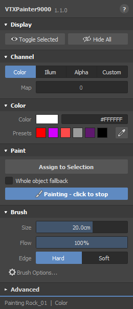

Tools / VTXPainter 9000
VTXPainter 9000
Paint and assign vertex colors from a Max-style panel.
What it does
VTXPainter 9000 is a panel for vertex colors on an Editable Poly or Editable Mesh. You can paint with a viewport brush, assign a color to the current selection, sample colors with an eyedropper and switch which channel you work on.

How to use it
- Select an Editable Poly or Editable Mesh.
- Open VTXPainter9000 (9000 Toolkit category, or a toolbar button).
- Pick a channel, then pick a color: a preset, the color box or the eyedropper.
- Assign to Selection paints the selected vertices, edges or faces. The Painting button starts the viewport brush; click it again, press Esc or select another object to stop.
Options
| Section | What it does |
|---|---|
| Display | Toggle Selected shows or hides vertex colors on the selected objects. Hide All hides them across the whole scene. |
| Channel | Color, Illum, Alpha or Custom (any map channel from 1 to 99). |
| Color | The current color, 6 presets (click to apply, right-click to change one) and an eyedropper that reads the exact color from a vertex. |
| Paint | Assign to Selection, a "Whole object fallback" for when nothing is selected, and the brush button. |
| Brush | Size, Flow, Hard or Soft edge and Brush Options. It opens by itself when you start the brush. |
| Advanced | Rarely used settings, closed by default. |
Good to know
- The brush is Max's own painter, with the usual ring, falloff and pen pressure. With an edge or face selection it paints only those vertices.
- The eyedropper needs a vertex selection and warns you if you use it from edges or faces.
- Spinners: drag sideways to change, Ctrl faster, Alt finer, wheel, click to type, right-click to reset.
- The panel follows your Max highlight color and remembers its position, open sections and presets.
- Made for Max 2024.